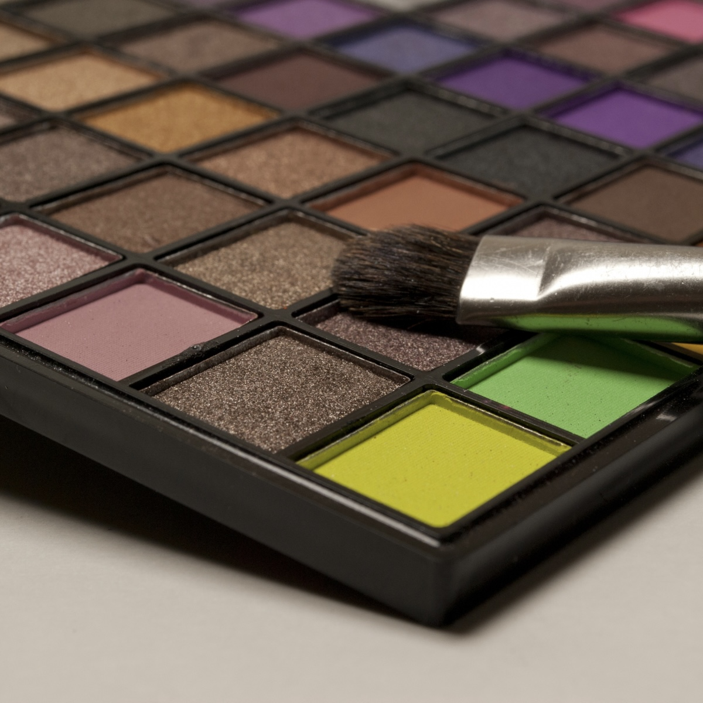
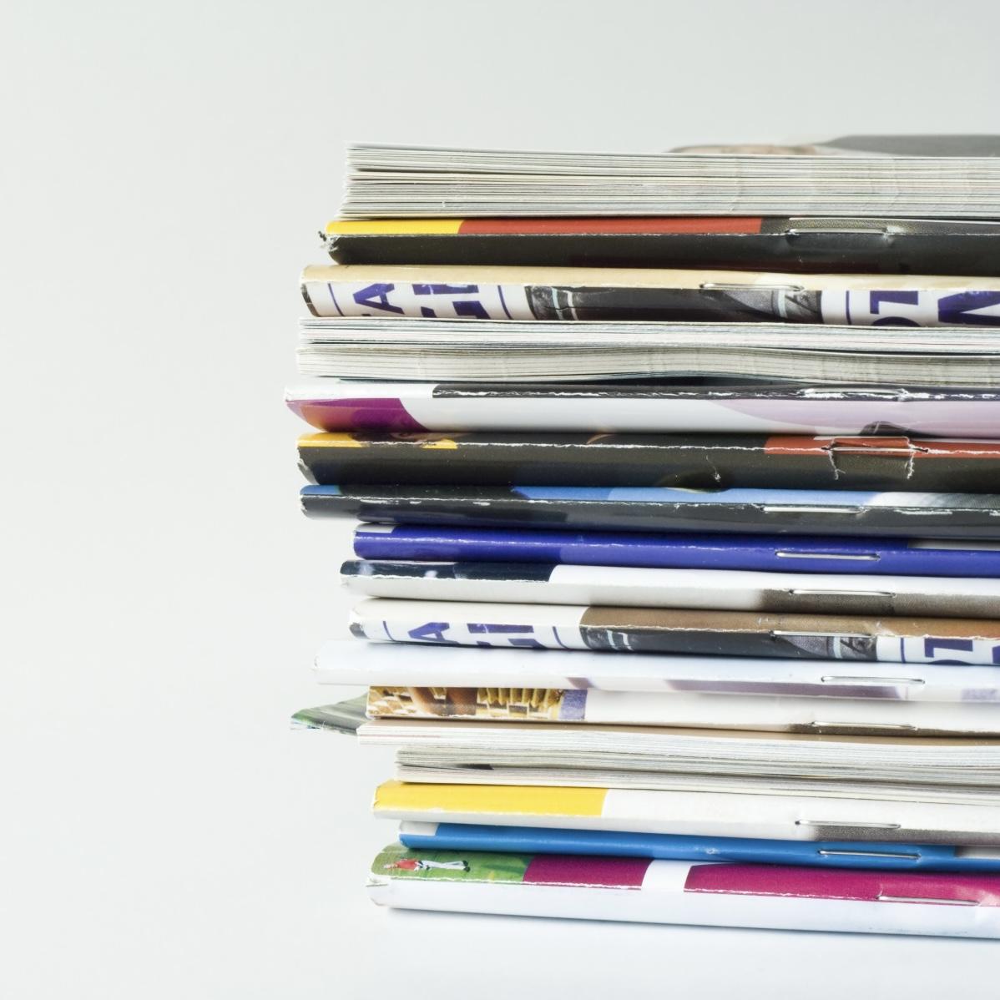
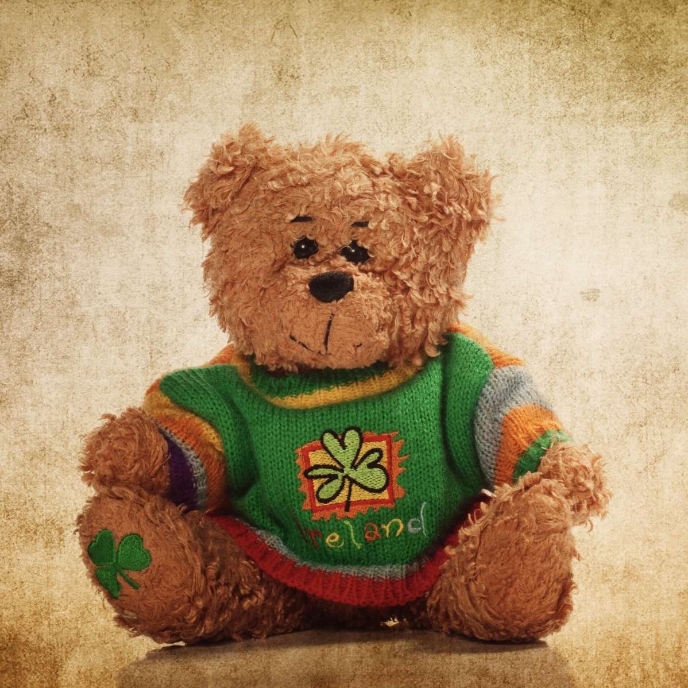
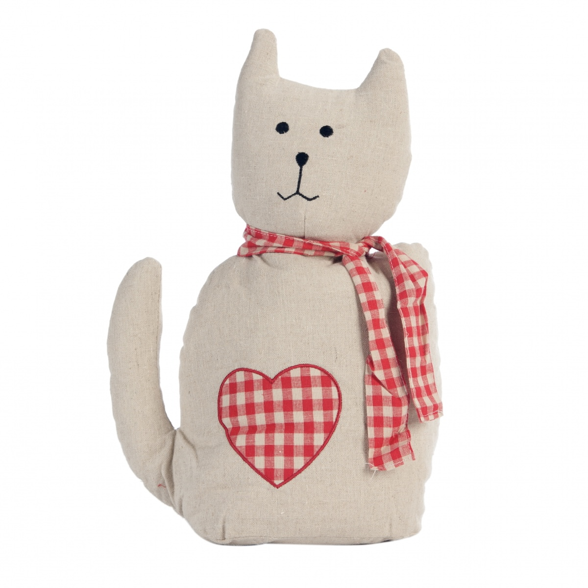
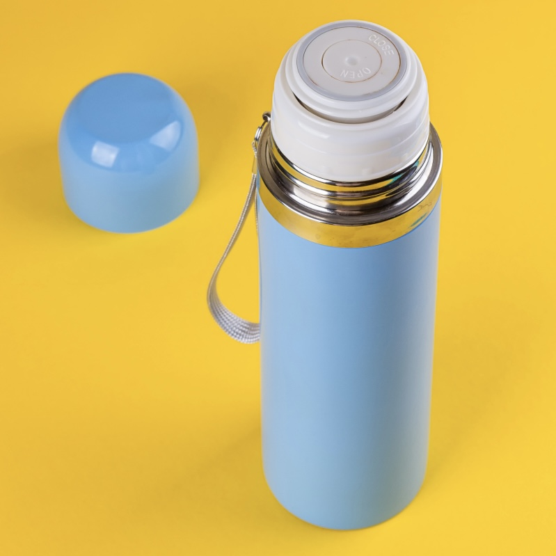
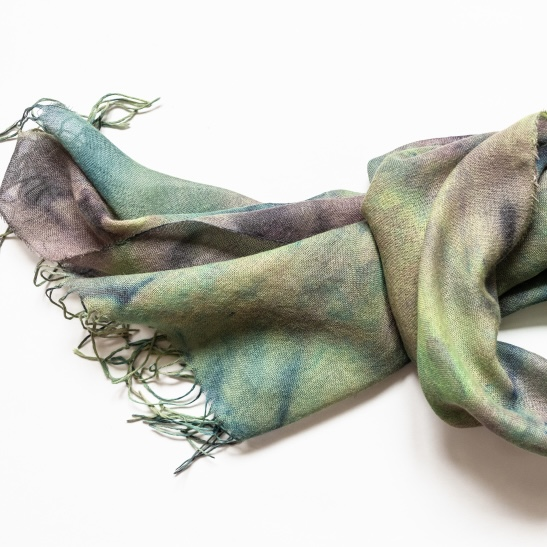
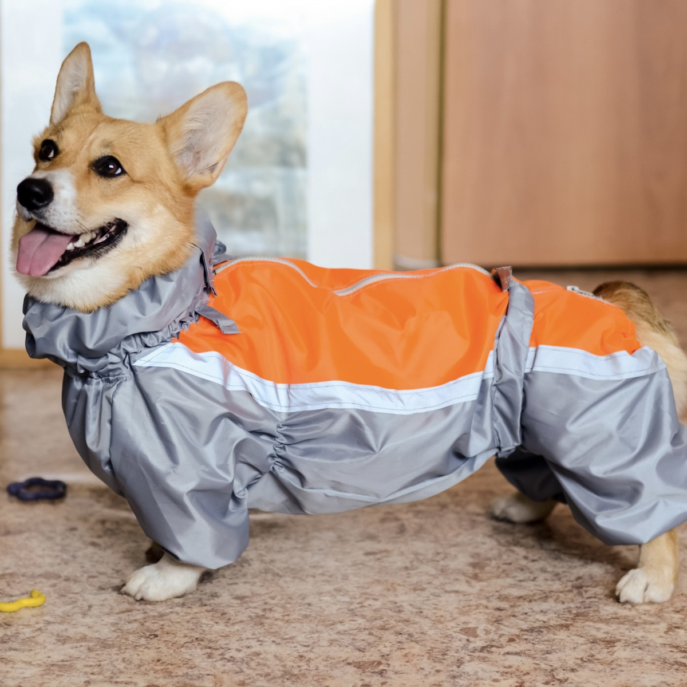

| ID | Construction | Illustration |
|---|---|---|
| 692 | Cl, а NP-Nom как думать-Prs? | Мне кажется, ему не идёт этот костюм, а ты как думаешь? |
| 2276 | Cl, по-твоему/по-вашему? | Сколько, по-твоему, это может продолжаться? |
| 706 | Аdj-Nom Cop NP-Nom, правда (ведь)? | Красивая девочка, правда? |
| 2281 | Cl, не правда ли? | Интересный художник, не правда ли? |
| 693 | а NP-Nom не думать-Prs, что Cl? | А ты не думаешь, что это слишком дорого? |
| 2279 | Cl, так (ведь)? | До магазина недалеко, так ведь? |
| 2278 | Cl, не так ли? | Уютная квартира, не так ли? |
Cl = clause, sentence (предложение)
NP = noun phrase (существительное)
Nom = Nominative case (номинатив)
Prs = present tense (настоящее время)
Adj = adjective (прилагательное)
Cop = copula verb быть (связочный глагол)
Русский конструктикон содержит информацию обо всех конструкциях урока
https://constructicon.github.io/russian/
а.
Дочь:
— Оля пригласила меня к себе на день рождения. Что мне надеть, как думаешь?
Мама:
— У тебя есть чудесное красное платье, правда ведь? Я думаю, можно надеть его.
Дочь:
— А как по-твоему, к нему подойдут мои светлые туфли?
Мама:
— Ты не думаешь, что в кроссовках или кедах тебе будет удобнее? По-моему, сейчас модно носить кроссовки с платьем. Вы же будете много танцевать, не правда ли?
Дочь:
— Ты права. Надену те белые кроссовки, которые ты мне подарила на Новый год. Спасибо за идею!
б.
— Ксюша сегодня очень хорошо выглядит, не правда ли?
— По-твоему, ей идёт новая причёска?
— Очень идёт, а ты как думаешь?
— Конечно! По-моему, чёлка* ей к лицу.
чёлка* — English: bangs (of hair); Norwegian: pannelugg
|
Cl, а NP-Nom как думать-Prs? Мне кажется, ему не идёт этот костюм, а ты как думаешь? |
а NP-Nom не думать-Prs, что Cl? А ты не думаешь, что это слишком дорого? |
| Спрашиваем мнение собеседника | Формально спрашиваем мнение, а на самом деле хотим привести дополнительный аргумент. Слово не не передаёт отрицания! |
| We ask for our interlocutor’s opinion | We formally ask for an opinion, but in fact we want to give an additional argument. The word не ‘not’ does not convey negation! |
| Når vi spør etter samtalepartnerens mening | Formelt sett spør vi etter samtalepartnerens mening, men egentlig ønsker vi å underbygge vår eget resonnement med ytterligere et argument. Ordet не ‘ikke’ er ikke nektende! |
1. эти брюки тебе уже малы? Давай купим тебе новые брюки.
2. Думаю, нам лучше не ехать на этом автобусе, а подождать следующий, ?
3. Почему ты не сказал мне о том, что собираешься прийти в гости? я могу быть не дома?
4. Я хочу покрасить волосы в розовый цвет. По-моему, мне пойдёт, ?
5. Почему ты хочешь быть похожей на Адель? твоя собственная внешность намного интереснее?
6. Я так волнуюсь из-за экзамена. Не уверен, что я сдам его, ?
Образец:
Странно, что ты хочешь идти на стрижку к новому парикмахеру. ___________________ (ты / результат может тебе не понравиться)?
->
А ты не думаешь, что результат может тебе не понравиться?
1.
— У вас такая хорошая фигура! Как вам повезло!
—____________________________ (вы / это благодаря спорту)?
2.
Я слышал, твоя сестра хочет стать стилистом. ____________________________ (она / для этого надо учиться)?
3.
Не понимаю, зачем твой брат купил вторую машину. __________________________ (он / это плохо для экологии)?
4.
В Тромсё люди даже зимой ходят без шапки. Интересно, ______________________ (они / они могут заболеть)?
| 1. Она за собой не следит: совсем седая ходит. 2. Удивительно: он такой полный, а рекламирует спортивную одежду. 3. Что ты понимаешь в еде? Ты такой худой! 4. Будь осторожен: в машине впереди нас за рулём блондинка. 5. Почему ваша Света всё время ходит в джинсах? Она же девочка! |
а. По-твоему, полные люди не могут заниматься спортом? б. По-твоему, блондинки плохо водят машину? в. По-вашему, худые не любят вкусно поесть? г. По-вашему, девочка должна быть в платье? д. По-твоему, волосы обязательно красить? |
Образец
У Алины весёлая улыбка.
->
У Алины весёлая улыбка, правда?
У Алины весёлая улыбка, правда ведь?
У Алины весёлая улыбка, не правда ли?
1. У Олега хитрый взгляд.
2. Мне к лицу зелёный цвет.
3. Настя очень красивая.
4. У Кирилла приятное лицо.
5. Пете к лицу эта рубашка.
6. Ваня очень симпатичный.
7. Алексей выглядит моложе своих лет.
Образец:

а.
Ханна: — В День знаний в магазинах России не продают алкоголь, ?
Майкл: — Да. , это же праздник для школьников.
б.
Закир: — Масленицу отмечают три дня, ?
Фатима: — Нет. . Масленицу же называют Масленичной неделей, значит семь дней.
в.
Шарлотта: — Ты отмечаешь День защиты детей, ?
Лиам: — Нет. , я же уже не ребенок и детей у меня пока нет.
г.
Сара: — Тебе подарили цветы на 8 марта, ?
Оливия: — Конечно! , я же женщина.
д.
Джеймс: — Итон, ты отмечал День святого Валентина в этом году, ?
Итон: — Нет, конечно! , я же недавно расстался с девушкой.
Информация о Саше:
Что есть в магазине:
|  тени для век (зелёные и красные) |
Энциклопедия "История России" |
 Журнал "Феминизм в комиксах" |
|  мягкая игрушка, мишка |
 мягкая игрушка, кот |
настольная игра “Дженга” |
|  термос (голубой) |
 шарф |
 курточка для собаки |
Образец
А: — На самолёте мы долетим намного быстрее, не так ли?
Б: — Да, но на мой взгляд, мы больше времени потратим в аэропорту. Поезд намного экологичнее, не так ли?
А: — Да, но он дороже, чем автобус, на мой взгляд. Автобусы ходят очень часто, мы можем выбрать самый удобный рейс, не так ли?
Опорные слова
Самолет
Поезд
Автобус
Личный автомобиль